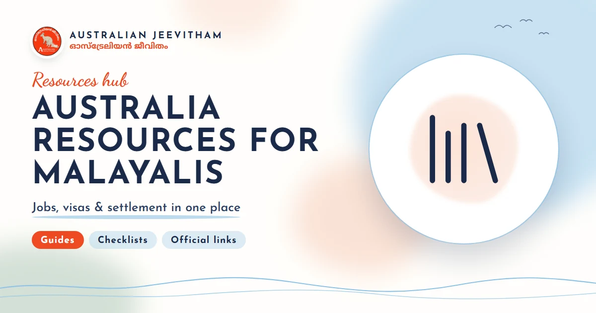
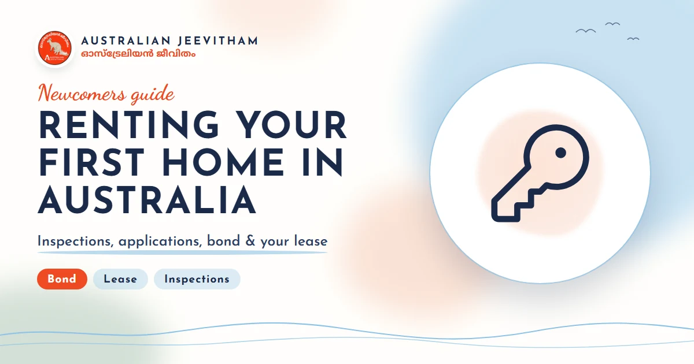
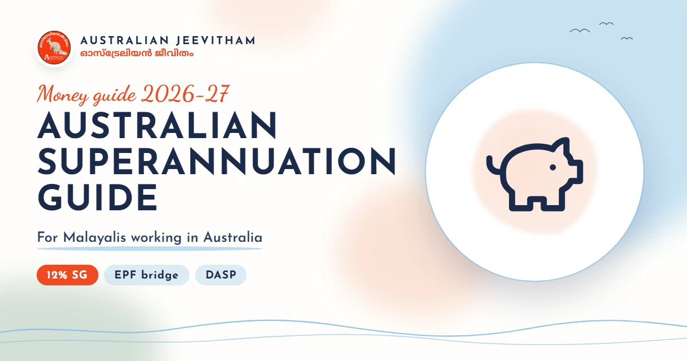

ഓസ്ട്രേലിയയിൽ ജോലി ചെയ്യാൻ നല്ല ഇംഗ്ലീഷ് എന്തിന്?Why You Need Good English to Work in Australia
Visa-ക്കും registration-നും മാത്രമല്ല, ജോലിസ്ഥലത്ത് ദിവസവും ആത്മവിശ്വാസത്തോടെ സംസാരിക്കാനും ഇംഗ്ലീഷ് വേണം. A test score gets you through the door. Clear, confident spoken English is what helps you get hired, stay safe, fit into the team and move up.
By Binu Vadakkedath
Published and last updated: November 2026 · Verify current test requirements with the linked official authorities
Practise speaking English for work in Australia with an AI coach that listens and gives you feedback. Choose your job, your level and help in Malayalam, Hindi or Tamil. നിങ്ങളുടെ ജോലിക്ക് പറ്റിയ സംഭാഷണങ്ങൾ - handover, interview, phone call - സംസാരിച്ച് പരിശീലിക്കാം. സംശയങ്ങൾ മലയാളത്തിൽ വിശദീകരിക്കും.
- Speaking practice
- Nurses & carers
- Job interviews
- Aussie slang
- Malayalam help
This guide is general information, not migration, legal, education or employment advice. English test requirements and scores can change. Check the official websites and use a registered migration agent where personal advice is required. തീരുമാനം എടുക്കുന്നതിന് മുമ്പ് official website-ലെ ഏറ്റവും പുതിയ വിവരങ്ങൾ പരിശോധിക്കുക.
1. English opens the door: visas and registration
Most skilled and work visas need an English test result such as IELTS, PTE or OET. For permanent skilled visas, a higher English level also earns more migration points, so better English can make the difference in a competitive points race.
Many professions also set their own English standard for registration. Nurses and midwives, for example, must meet the Nursing and Midwifery Board of Australia's English language skills standard, which is usually higher than the visa minimum.
Visa-ക്ക് വേണ്ട score-ഉം registration-ന് വേണ്ട score-ഉം വ്യത്യസ്തമാകാം. രണ്ടും official website-ൽ പരിശോധിക്കുക.
2. A test score is not the same as workplace English
Many people pass IELTS or PTE and still find the first months at work hard. Exams are slow and predictable. Real work is fast, noisy and full of different accents.
- Speed: colleagues speak quickly and drop words ("Ya right?" for "Are you all right?").
- Phone calls: no face, no gestures and often a bad line - calling a doctor, a pharmacy or a client is a big step.
- Small talk: "How was your weekend?" in the tea room builds trust with your team.
- Accents: Australian, British, Filipino, Nepali, African and Indian colleagues all sound different.
ഇത് ഒരു കുറവല്ല - പരിശീലനം കൊണ്ട് മാറുന്ന കാര്യമാണ്. ദിവസവും കുറച്ച് മിനിറ്റ് ഉറക്കെ സംസാരിച്ച് പരിശീലിക്കുക.
3. Getting the job: interviews in Australia
Australian interviews often use behaviour questions such as "Tell me about a time you dealt with a difficult patient." Interviewers want a short story with a clear situation, what you did and the result - not a memorised speech.
A friendly, relaxed tone matters too. Smile, use the interviewer's first name if they introduce themselves that way, and it is fine to say "Could you repeat that, please?"
Interview-ൽ ഉത്തരം കാണാതെ പഠിച്ചു പറയുന്നതിനു പകരം, സ്വന്തം അനുഭവം ഒരു ചെറിയ കഥ പോലെ പറയാൻ പരിശീലിക്കുക.
4. Safety and care: why clear English protects people
In healthcare, aged care, childcare, construction and factories, a misunderstanding can hurt someone. Workers need to give clear handovers, read care plans, report incidents and repeat back instructions to check them.
Nurses in Australia often use a structure such as ISBAR (Identify, Situation, Background, Assessment, Recommendation) for handovers and phone calls to doctors. Practising this out loud makes a real difference on a busy shift.
ഒരു കാര്യം മനസ്സിലായില്ലെങ്കിൽ ചോദിക്കാൻ മടിക്കരുത്. "Sorry, can you say that again?" എന്ന് ചോദിക്കുന്നത് ഓസ്ട്രേലിയയിൽ സാധാരണമാണ്, അത് സുരക്ഷയുടെ ഭാഗമാണ്.
5. Fitting in: Aussie words and polite, friendly English
Australian workplaces are informal. You call your manager and most doctors by their first name, and requests are softened: "Would you mind checking this?" sounds better than "Check this."
You will hear everyday words such as arvo (afternoon), no worries (that is fine), heaps (a lot), reckon (think), smoko (a short break) and How are you going? (How are you?). You don't have to use them, but understanding them helps you feel part of the team.
"Sir", "Madam" എന്ന് എപ്പോഴും വിളിക്കേണ്ടതില്ല. സൗഹൃദപരമായി, മര്യാദയോടെ first name ഉപയോഗിക്കാം.
6. Moving up: English and your career
Team leader, clinical nurse, educator and manager roles all need confident English: running meetings, writing reports, giving feedback and speaking up for your team or your patients. Good communication is often what decides who gets promoted.
ജോലിയിൽ ഉയരാൻ technical skill മാത്രം പോരാ - ആത്മവിശ്വാസത്തോടെ സംസാരിക്കാനുള്ള കഴിവും വേണം.
7. How to practise speaking every day
- Speak out loud for 10 to 15 minutes a day - reading silently is not enough.
- Practise the real situations of your job: handovers, phone calls, interviews and small talk.
- Listen to Australian voices: local radio, news and podcasts.
- Record yourself and listen back for unclear words.
- Get feedback, and don't be afraid of mistakes.
To make this easier, we built English Coach by Australian Jeevitham, an app (free to use during the trial period) where you talk with an AI coach in real work situations - nurse handovers, aged care, job interviews, phone calls and everyday Aussie conversations. Explanations come in Malayalam, Hindi or Tamil, and you can choose Australian, British or Indian English.
ആപ്പ് ഇപ്പോൾ beta ആണ് - എന്തെങ്കിലും ശരിയാക്കാനുണ്ടെങ്കിൽ ആപ്പിലെ Feedback വഴി ഞങ്ങളെ അറിയിക്കുക.
Official sources and current checks
Test score requirements മാറാം. താഴെയുള്ള official links പരിശോധിക്കുക.
Frequently asked questions
Do I need an English test to work in Australia?
Most skilled and work visas ask for an English test result, and many professions such as nursing ask for their own, often higher, score for registration. Check the exact requirement for your visa and your profession on the official websites.
Is a good IELTS or PTE score enough for the workplace?
Not always. Tests check reading, writing, listening and speaking in exam conditions. At work you also need fast listening to different accents, phone calls, small talk, handovers and everyday Australian words. Regular speaking practice closes that gap.
What Australian slang should I know for work?
Common ones include arvo (afternoon), no worries (that is fine), heaps (a lot), reckon (think), how are you going (how are you) and smoko (a short break). You do not need to use slang yourself, but understanding it helps a lot.
Does the English Coach app cost anything?
English Coach by Australian Jeevitham is free to use during the trial period. You sign in with Google or email and get a daily allowance of AI practice.
Skills assessments, settlement & life after PR

Malayalam Resources Hub
A comprehensive directory of guides covering jobs, visas, healthcare registration, licence conversion, superannuation, and settling into Australia.
- 11+ Guides
- Jobs & Visas
- Settlement

Renting Your First Home
Rental applications, inspections, state-specific bond rules, condition reports, and tenancy resources for new arrivals.
- Bond Rules
- Inspections
- Tenant Rights

Superannuation Guide
12% SG rate, Payday Super, EPF/PF comparison, choosing and consolidating funds, and DASP for eligible former temporary residents.
- 12% SG Rate
- EPF vs Super
- DASP